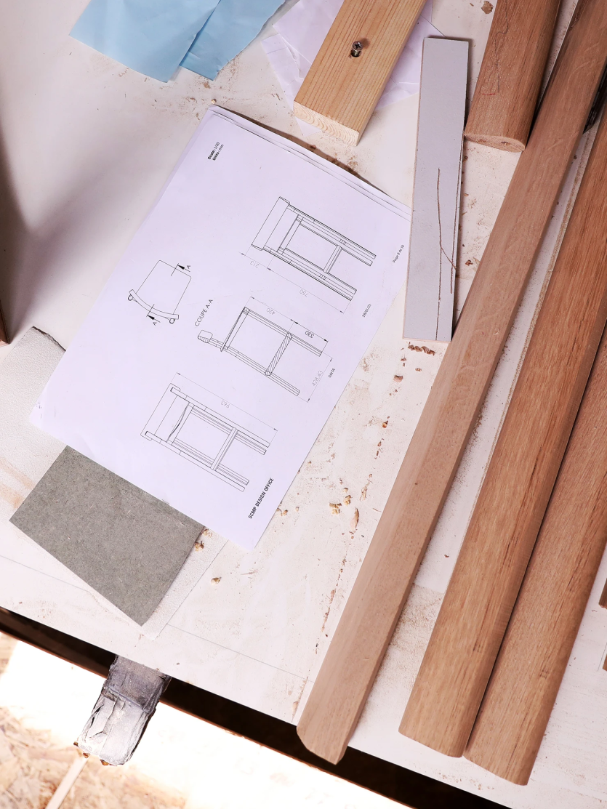
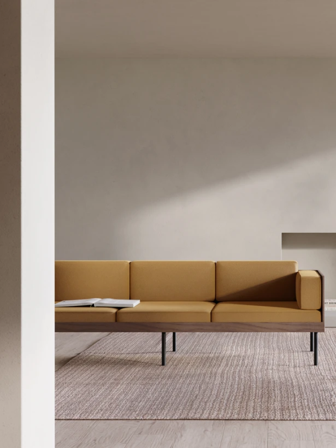
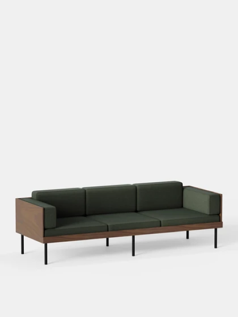
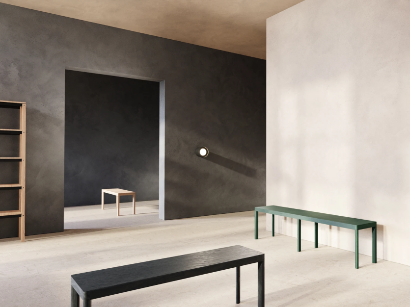
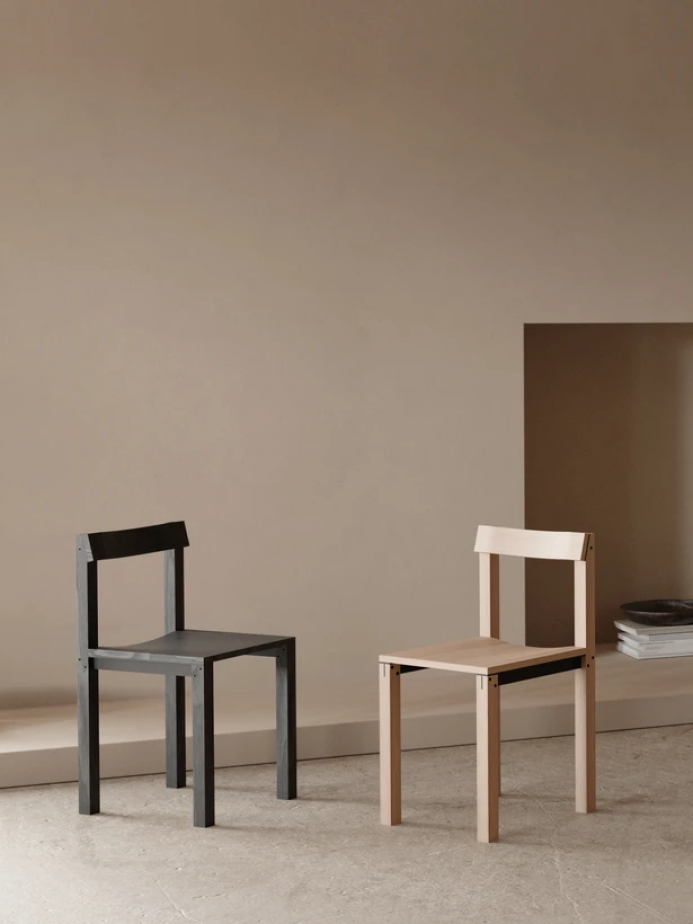
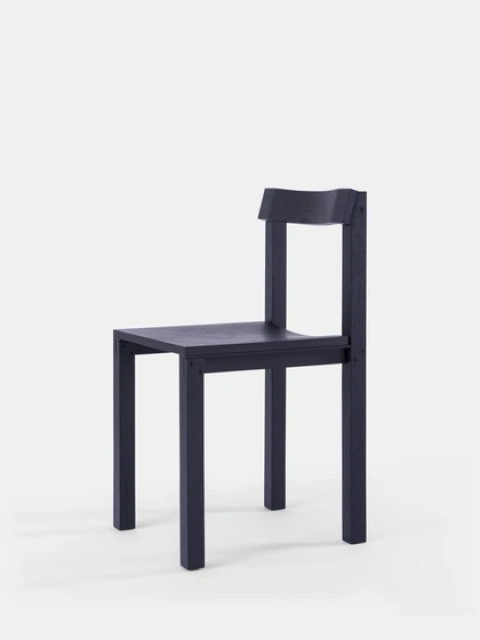
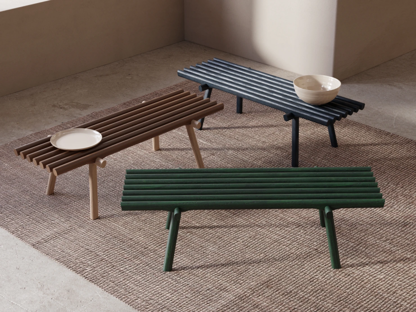

Galta collection by SCMP Design Office
shop
Dans les coulisses de la fabrication Kann

 

Linéaire et minimaliste, les bancs Galta dessinés par SCMP Design Office
 

Des lignes horizontales s’encastrent dans le piètement, rendant apparente la technicité de l'assemblage.